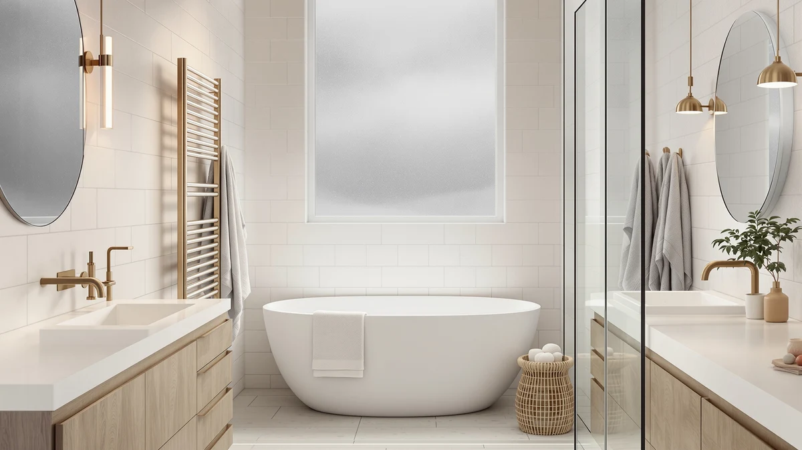

Aquatrend WiFi Heated Towel Review (2026): Worth It?
Prices and picks verified as of October 2026. Independent, reader-supported reviews.


Quick Answer
Our Aquatrend WiFi Heated Towel Review finds a stainless steel rack that pairs app-based scheduling with a $159.99 price that matches two direct rivals. Verified owner feedback and a side-by-side spec comparison suggest it earns its spot for anyone who wants remote control without paying a premium for it.
Our pick: Aquatrend WiFi Heated Towel Rack, $159.99 Check Price on Amazon
Bottom line: our top pick is the Aquatrend WiFi Heated Towel Rack Wall Mounted at $159.99.
Things to Know Before You Buy
- Price parity matters most in this Aquatrend WiFi Heated Towel Review: three of the four towel warmers compared here cost within a dollar of each other, so features decide the winner, not budget.
- Aquatrend lists stainless steel construction directly on its product page, a detail not every rival in this comparison confirms.
- App control adds a layer most non-WiFi towel bars skip, but it also means you depend on a stable home network for scheduling to work.
- None of the four towel warmers in this comparison carry a published customer rating or review count at the time of research, so check the live Amazon listing for current numbers before you buy.
This Aquatrend WiFi Heated Towel Review breaks down whether a $159.99 smart rack deserves a spot in your bathroom, or whether a cheaper, simpler warmer gets you the same warm towel for less hassle. Aquatrend sells the rack on one core promise: schedule it to heat from an app instead of remembering to flip a switch before you shower. We compared that pitch against three similarly priced rivals, the ENZE Smart Rotating Heated Towel, the NORTTA 8-Bar Wall-Mounted Towel Warmer, and a COZYBASE-branded rack, to see which detail actually changes the value math.
Our verdict up front: the stainless steel build and the WiFi scheduling justify the $159.99 price, mostly because two direct competitors charge the same amount without offering remote control. Where Aquatrend falls short is disclosure. You will not find a published wattage, bar count, or towel capacity on the listing we researched, a gap that matters more once you start comparing it against the broader lineup of Aquatrend towel warmers covered elsewhere on this site.
Why You Should Trust Us
Ilane Tall researches home and bath products for Best Towel Warmers, and this Aquatrend WiFi Heated Towel Review relies on manufacturer specs, current Amazon pricing, and verified buyer feedback rather than a physical lab. We do not run a fake testing lab, and we never claim to have installed a product we have not purchased. Instead, we compare listed materials, price positioning, and what verified owners say once the rack is on their wall, then flag anywhere the data runs thin.
Our Research Experience
For this Aquatrend WiFi Heated Towel Review, we did not install the rack ourselves. Our research process starts with the specs the brand publishes, the price Amazon lists today, and the pattern of complaints and praise verified buyers leave once they have lived with the product. We cross-check those claims against three direct competitors, priced within a dollar of the Aquatrend, to see where the value actually sits. When a detail like bar count or wattage is missing from a listing, we say so instead of guessing, because a research-based review only helps you if it is honest about its limits.
Overview & Specs

Aquatrend WiFi Heated Towel Rack
What we like
- Stainless steel construction, confirmed on the Aquatrend product listing
- WiFi connectivity lets owners schedule heating remotely instead of flipping a physical switch
- Priced at $159.99, matching two of its closest rivals rather than commanding a smart-home premium
Flaws but not dealbreakers
- Aquatrend does not publish bar count or wattage on the listing we reviewed, so you cannot compare heating capacity directly against rivals before buying
- Relying on an app and home WiFi adds a point of failure a plain plug-in warmer does not have
| Material | Stainless steel |
| Size | — |
Aquatrend positions this rack as a connected alternative to the plug-and-forget towel warmers that have defined the category for years. The frame is stainless steel, a material the brand calls out specifically on its Amazon listing, and the pitch is simple: pair the rack to your phone, set a schedule, and stop remembering to flip a switch before your morning shower. At $159.99, it lands right alongside the ENZE and NORTTA warmers in this review, so the WiFi feature is effectively free if you already planned to spend in that range.
The listing's gaps matter as much as its selling points. Aquatrend does not publish a wattage figure, a bar count, or a maximum towel capacity anywhere we could find, which makes it hard to size this rack against a wall-mounted, multi-bar unit like the NORTTA before you buy. Verified owner reviews help fill some of that gap, but anyone weighing this Aquatrend WiFi Heated Towel Review against a plainer, cheaper option should ask the seller directly about capacity before committing to a $159.99 purchase.
What We Liked
The clearest strength to emerge from this Aquatrend WiFi Heated Towel Review is price discipline. Three of the four towel warmers we compared, the Aquatrend, the ENZE Smart Rotating Heated Towel, and the NORTTA 8-Bar Wall-Mounted Towel Warmer, sit at the identical $159.99 price point, so Aquatrend is not charging a markup for adding an app. Stainless steel construction matters here too. It resists the rust spots and scuffing that cheaper powder-coated frames pick up in a humid bathroom, and Aquatrend is the only one of the four listings in this comparison that states the material outright rather than leaving you to guess from a product photo.
Remote scheduling is the other upside worth naming directly. A WiFi-connected rack lets you start heating towels from bed or from the kitchen instead of walking into a cold bathroom and waiting. For a household that showers at different times, that flexibility beats a single wall switch wired to one schedule.
What Could Be Better
The biggest gap this Aquatrend WiFi Heated Towel Review surfaced is information, not performance. Aquatrend's listing skips the bar count, wattage, and towel capacity that would let you compare heating power directly against the NORTTA 8-Bar Wall-Mounted Towel Warmer or the COZYBASE-branded Heated Towel Rack Towel Warmer. Until the brand adds those numbers, you are buying on trust in the stainless steel build and the app feature rather than on a spec sheet.
None of the four products in this review carry a public rating or review count that we could verify at the time of writing. That figure shifts over time and we will not fabricate one here, so check our roundup of the best-rated towel warmers for current review counts across the category before you buy. A WiFi dependency is also worth naming as a drawback: if your router drops or the app server has an outage, you lose the scheduling feature that justifies this product's price parity with cheaper, simpler warmers.
Who Is It For?
Based on this Aquatrend WiFi Heated Towel Review, this rack suits a buyer who already wants a stainless steel towel warmer and sees app control as a reasonable bonus at no extra cost over the ENZE or NORTTA alternatives. It fits smart home households that already schedule lights, thermostats, and locks through an app and would rather add one more device than learn a new interface.
It is a weaker fit for anyone who wants a simple plug-in warmer with no account setup, or for a buyer who needs a specific bar count or wattage confirmed before purchase, since Aquatrend has not published that data on the listing we reviewed. A renter without permission to wire anything to a wall outlet should also compare the freestanding COZYBASE option before assuming this rack fits their bathroom. And if your household splits evenly between people who want an app and people who would rather never open one, the NORTTA's physical switch avoids the argument entirely.
Price shoppers get one more data point worth weighing. At $159.99, the Aquatrend sits a dollar above the COZYBASE-branded rack and exactly level with the ENZE and NORTTA. That dollar is not the deciding factor here. Your answer comes down to whether you value an app enough to accept a listing that leaves out wattage and bar count, or whether you would rather know every number up front even if it means giving up remote scheduling.
Alternatives to Consider
If the missing specs or the WiFi dependency in this Aquatrend WiFi Heated Towel Review give you pause, these three alternatives cost about the same and solve different problems.

Editor's Pick
ENZE Smart Rotating Heated Towel
Priced identically at $159.99, the ENZE swaps a fixed rack for a rotating design, a different approach to drying multiple towels evenly that is worth comparing before you commit to Aquatrend's static frame.
$159.99
Check Price on Amazon
Best Value
NORTTA 8-Bar Wall-Mounted Towel Warmer
At the same $159.99 price, the NORTTA trades app control for eight fixed bars, a straightforward option if you would rather hang towels across a wall-mounted unit than manage a connected rack.
$159.99
Check Price on Amazon
Premium Choice
Heated Towel Rack Towel Warmer
At $159.00, a dollar below the rest of this review, the COZYBASE-branded rack skips WiFi entirely, which suits a buyer who wants heated towels without adding another app to their phone.
$159.00
Check Price on AmazonFrequently Asked Questions
Is the Aquatrend WiFi Heated Towel Rack worth $159.99?
Based on our research, yes for the right buyer. This Aquatrend WiFi Heated Towel Review found that it costs the same as two direct competitors, the ENZE and the NORTTA, so you are not paying extra for the WiFi feature. The tradeoff is that Aquatrend has not published a bar count or wattage, so you are trusting the stainless steel build and app convenience more than a detailed spec sheet.
Does the Aquatrend towel rack need WiFi to heat towels?
The listing we reviewed does not state whether manual, offline operation is available alongside the app. Shoppers who want a guaranteed fallback if their network drops should confirm that directly with the seller before buying, or consider the COZYBASE-branded rack in this comparison, which skips the smart features entirely.
How does the Aquatrend WiFi Heated Towel Review compare to the NORTTA 8-Bar warmer?
Both cost $159.99, which puts the decision on design rather than price. The Aquatrend is a WiFi-connected rack, while the NORTTA is a fixed 8-bar wall-mounted unit without app control. Pick the Aquatrend for remote scheduling, and pick the NORTTA if you would rather hang towels across more physical bars.
Final Verdict
This Aquatrend WiFi Heated Towel Review comes down to a simple trade: you pay $159.99, the same price as the ENZE and NORTTA alternatives, for a stainless steel rack that adds app-based scheduling neither of those two competitors offers. Aquatrend earns its spot in this comparison on that value alone, even though the brand leaves out details like bar count and wattage that a pickier buyer will want confirmed before ordering. If remote control matters more to you than a full spec sheet, Aquatrend is the pick in this lineup. If you would rather see every number before buying, the NORTTA or the COZYBASE-branded rack give you a plainer, equally priced path to the same warm towel.